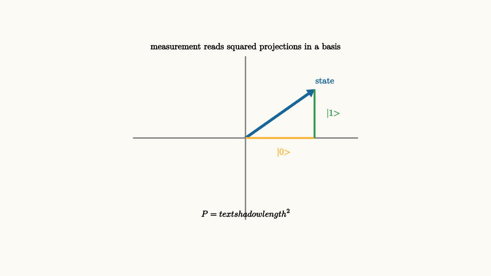

A qubit state is a vector of amplitudes. Measurement is the act that turns that vector into a classical outcome. The crucial detail is that measurement always brings its own coordinate system. Asking a qubit whether it is $|0\rangle$ or $|1\rangle$ is one question. Asking whether it is $|+\rangle$ or $|-\rangle$ is a different question.
This is easiest to understand by thinking about a shadow. A vector in the plane has a shadow on the horizontal axis and a shadow on the vertical axis. Rotate the axes, and the same vector has different shadows. Quantum measurement uses squared shadow lengths, called squared projection lengths, as probabilities.
The state can be written in the computational basis as
If we measure in that basis, the probabilities are
Those numbers are squared projection lengths. Measurement asks, "how much of the vector lies along each answer direction?"

source
background = [0.985, 0.98, 0.955, 1]
camera = Camera(4.8b)
mesh diagram = block {
. stroke{GRAY, 2} Line(start: [-2.2, 0, 0], end: [2.2, 0, 0])
. stroke{GRAY, 2} Line(start: [0, -1.6, 0], end: [0, 1.6, 0])
. color{BLUE} Arrow(start: [0, 0, 0], end: [1.35, 0.95, 0])
. stroke{ORANGE, 3} Line(start: [0, 0, 0], end: [1.35, 0, 0])
. stroke{GREEN, 3} Line(start: [1.35, 0, 0], end: [1.35, 0.95, 0])
. center{[1.55, 1.12, 0]} color{BLUE} Text("state", 0.62)
. center{[0.75, -0.28, 0]} color{ORANGE} Text("|0>", 0.62)
. center{[1.72, 0.48, 0]} color{GREEN} Text("|1>", 0.62)
. center{[0, 1.78, 0]} Text("measurement reads squared projections in a basis", 0.62)
. center{[0, -1.48, 0]} Tex("P=\\text{shadow length}^2", 0.60)
}
"basis projections"
play Fade(0.7)After the measurement, the state updates to match the observed answer. If the result is $0$, the state becomes $|0\rangle$. If the result is $1$, it becomes $|1\rangle$. This update is why a second immediate measurement in the same basis gives the same answer. The first measurement has prepared the state along the answer direction.
Changing the question
The states
form another basis. A qubit in state $|0\rangle$ has equal projection onto $|+\rangle$ and $|-\rangle$, so measuring $|0\rangle$ in the plus-minus basis gives each result with probability $1/2$.
This explains why quantum measurement can look random even when the state is fully known. The randomness appears when the chosen measurement basis is tilted relative to the state. A fully known vector can have two equal shadows in a rotated coordinate system.
Quantum circuits use this as a tool. The measurement hardware might naturally read the computational basis, so the circuit applies gates first. A Hadamard before measurement changes a plus-minus question into an ordinary zero-one readout:
In words, a gate can rotate the question into a basis the detector already knows how to ask.
source
param turn = 0.0
background = [0.985, 0.98, 0.955, 1]
camera = Camera(4.8b)
let Basis = |turn| block {
let a = 0.785 * turn
. stroke{GRAY, 2} Line(start: [-2.1, 0, 0], end: [2.1, 0, 0])
. stroke{GRAY, 2} Line(start: [0, -1.5, 0], end: [0, 1.5, 0])
. color{BLUE} Arrow(start: [0, 0, 0], end: [1.4, 0, 0])
. color{ORANGE} Arrow(start: [0, 0, 0], end: [1.15 * cos(a), 1.15 * sin(a), 0])
. color{GREEN} Arrow(start: [0, 0, 0], end: [-1.15 * sin(a), 1.15 * cos(a), 0])
. center{[0, 1.72, 0]} Text("rotate the measurement basis", 0.62)
. center{[0, -1.45, 0]} Text("same state, different probabilities", 0.62)
. center{[1.52, 0.05, 0]} Text("state", 0.62)
}
"computational basis"
mesh basis = Basis(turn: $turn)
play Fade(0.6)
"plus minus basis"
turn = 1.0
basis = Basis(turn: $turn)
play Lerp(1.2)
"readout"
basis = block {
. center{[0, 1.45, 0]} Text("circuits often rotate before measuring", 0.62)
. center{[-1.7, 0.25, 0]} Tex("|+\\rangle", 0.72)
. fill{alpha{0.16} GREEN} stroke{GREEN, 3} center{[-0.35, 0.25, 0]} Rect([0.55, 0.46])
. center{[-0.35, 0.25, 0]} Text("H", 0.62)
. stroke{BLACK, 3} Arrow(start: [0.15, 0.25, 0], end: [0.9, 0.25, 0])
. fill{alpha{0.14} BLUE} stroke{BLUE, 3} center{[1.55, 0.25, 0]} Rect([0.8, 0.52])
. center{[1.55, 0.25, 0]} Text("measure 0", 0.62)
. center{[0, -1.1, 0]} Text("change the state so the detector asks the desired question", 0.62)
}
play Trans(1.0)There is a second lesson hidden here. Measurement is irreversible from the point of view of the circuit. Before measurement, a superposition can still interfere. After measurement, the state has been replaced by one of the basis answers. That update is useful when the algorithm calls for a classical result. It is expensive when phase information was still needed.
This is why quantum algorithms tend to postpone measurement. They use gates to move amplitude around first. Then they choose a basis where the desired answer has a large squared projection. Finally they measure, accepting that the rich amplitude vector has become one classical sample.
There are also measurements with more than two outcomes. For several qubits, the computational basis contains $2^n$ possible bit strings. Measuring all qubits asks for one of those strings. Measuring only one qubit asks a coarser question and leaves the remaining qubits in a state conditioned on the answer. This is how algorithms can mix quantum and classical control: measure a small part, use the result to choose the next gate, and keep the rest of the state coherent when the circuit calls for it.
The lesson to keep
Measurement is a basis-dependent question asked of an amplitude vector. Probabilities come from squared projection lengths, and the observed answer becomes the new state. The basis is part of the experiment, so changing the basis changes which features of the state become classical information. In quantum computing, gates and measurements work together: gates prepare the question, measurement records the answer.